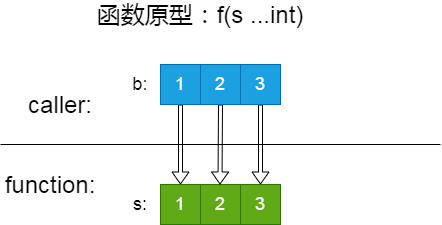

本文来源于一个朋友的提问。
数组怎么样展开？
问题描述比较模糊，进一步沟通之后得知，他需要的是将一个数组（其实是切片）展开，来作为函数的可变参数。
可变参数
关于可变参数，之前在这里（函数签名部分）介绍过。考虑到那篇文章内容比较多，这里再介绍一下。
简单来说，可变参数就是函数里以 x ...T 这种形式声明的参数。举例说 f(s ...int)，参数 s 接受零到多个 int 型的参数，可以像这样调用 f(a, b, c) （a，b，c 都是 int 型的值）。逐个传入的参数（实参）会装包成一个切片 s，传递给函数。
从函数内部的角度，这跟 f(s []int) 是等价的。而从调用方的角度看则有差别：可变参数接受多个 int 型参数，而后者只能接受一个 []int 类型参数。
如果有多个同类型参数，遇到第二种函数定义（参数类型是切片），就只能自己先创建一个切片，再直接传递切片。不过相信你也明白了，可变参数不过是把创建切片过程省略的语法糖：
|
|
反过来，有一个 []int 变量 b ，需要传递给可变参数怎么办？难道要 f(b[0], b[1], b[2]) 这样一个个用下标访问？如果切片很长，又或者直接不确定长度怎么办？
在其它语言，例如 Python 里，对于可迭代类型对象（Iterator Types），可以用装包和拆包（解包）解决这个问题，使用上非常灵活。
Go （看起来）也可以解包：
|
|
注意 ... 的位置，声明时在前，调用时在后。
但，这是一个假的解包。这只是又一个语法糖，背后把 b 直接赋值给 s 。把 b 拆分成逐个参数传递，然后重新打包成切片 s 这件事，根本没有发生。
你以为的解包：
（图中的细箭头表示指针，粗箭头表示拷贝）
或者至少是这样的：

其实是这样的：
切片是引用类型，变量本身保存的是头信息（元数据），里面有一个指向底层数组的指针，元素数据保存在数组里。在赋值和传参时，拷贝的只是切片头（slice header），底层数组并不会递归拷贝。新旧切片共享同一个底层数组。
... 只是表示 b 是一组参数，而不是一个参数。如果缺少 ... ，直接 f(b) ，会把 b 直接当成一个参数（也就是 s 切片的一个元素），参数的 []int 类型和元素的 int 不匹配。
好消息是，没有额外开销。坏消息是，因此使用上多了很多限制。
b必须是相同类型的切片。[]string传递给[]int固然不行；因为没有经过解包后重新装包，数组传递给切片也不行。...（姑且还是叫解包）不能跟其它参数或者其它解包参数一起使用。f(x, b...)或者f(b..., c...)都会报错。因为没有经过解包后重新装包，元素x和切片b，或者b和c两个切片，都不会组成一个新切片。- 修改
s的元素，会影响到b。（因为它们共享一个底层数组）
类型转换
由于没有看到具体代码，根据对方的描述，猜测问题出在没有理解『伪解包』上。所以我对这部分进行了解释。
然而问题并没有解决，第二天提问者又来了。
这次提问者给了更详细的信息。
他需要调用 gorm 包的 Having 方法，方法签名是：
|
|
看起来跟我的猜测差不多。还有什么该注意的我忘了说？
我正想要代码和具体的报错信息，对方说了一句：
为什么 []string 不能转为 []interface{}？
我一下子明白了问题所在：解包的实参是一个 []string 而不是 []interface{} 。
如果是多个 string 变量作为 values 参数，反而没有问题。但是把 []string 解包，就报错了。
当然，提问者自己也意识到问题出在这里了，只是不明白原因。而我过分关注可变参数，忘了留意类型。
这个现象很容易重现，完全没必要用到 gorm 包。下面的代码就报同样的错误：
|
|
注意是 fmt.Print(...interface{}) ，内置函数 print(...Type) 的原理不在今天的讨论范围。
当然理解可变参数也很必要。我们还是需要先理解（伪）解包，知道解包的背后是直接传递切片。如果是语言做了真实的解包和重新装包，这个问题也就不存在了（见 ifaces2 部分代码）。
一旦了解这些，提问者很自然地发现问题变成了：既然任意类型都可以转换为空接口 interface{}，为什么 []string （或者任意别的类型的切片）不能转为空接口切片 []interface{}？
是的，不可以。其它强类型语言也不可以。其它容器也不可以。
简单粗暴的结论就是：
子类型变量可以向父类型变量转换；但存放子类型的容器跟存放父类型的容器没有关系，不能转换。（为了方便理解，父子类型借用的 Java 的概念，Go 没有继承机制。）
Go 里面没有继承，只有接口和实现；同时（暂时）没有泛型，只有内置派生类型（slice, map, chan 等）可以指定元素的类型。Go 版本的表述是，即使类型
T满足接口I，各自的派生类型也没有任何关系（例如[]T和[]I）。
在 Java 里，Integer 是 Number 的子类，ArrayList<Integer> 是 List<Integer> 的子类。但是，List<Integer> 跟 List<Number> 没有继承关系，不能转换，只能创建新容器，然后拷贝元素。
对应到 Go 里，string 满足 interface{} ，string 变量可以转换为 interface{} 变量；但对应的切片 []string 却不能转换为 []interface{} 。map 和 chan 同理。
原因
设计成这样的理由，稍微解释就很容易理解。
无论 Java 的类继承和接口实现，还是 Go 的鸭子类型接口，都是为了实现多态。
关于多态（特别是不同语言下的多态）这里不展开。一句话来形容的话，Java 的多态是『代父从军』，『龙生九子，各有不同』；Go 的多态则是『如果它跑起来像鸭子，叫起来像鸭子，那它就是一只鸭子』，但是每一只『鸭子』可以有自己不同的行为。
具体的实现只要满足相同的约束，就可以赋值给上层抽象类型（父类型或者接口），当作该类型使用；与此同时，不同的实现有不同的行为。调用代码只需要认准上层类型的约束，不必关心具体实现的行为，达到调用和实现的松耦合。这样可以做到在不修改调用的情况下，替换掉具体实现。
Integer 完全可以当作 Number 使用，因为 Number 有的行为 Integer 都有；日后也可以根据需要替换成 Float 或者 Double。ArrayList<T> 和 List<T> 也类似（注意，T 是同一个类型）。Go 的空接口 interface{} 对类型没有任何约束，可以接受任何类型。
可一旦涉及容器，情况就变了。如果一个 ArrayList<Integer> 可以当作 ArrayList<Number> ，意味着调用方可以往里面添加任何 Number 类型（及子类型），有可能是 Integer ，也可能是 Float 或者 Double 。
背后的具体实现 ArrayList<Integer> 可以放别的 Number 类型吗？不行。
同样的，[]string 不能存放 string 以外的元素。如果允许 []string 转换成 []interface{} 变量，意味着需要接受任意类型的元素。
总结：
父类或者接口作为上层抽象类型，在运行时可能会被替换为任意子类型，其可接受的行为应该是子类型的子集 。（父亲会的技能，孩子们都要会。父亲不能接孩子们不会的活，否则这个活就无法在运行时分派给孩子们干。）
[]interface{} 可以接受的元素类型，比任意具体类型的切片都要多，显然不满足上述条件。从『空接口是任意类型的抽象』，得出空接口切片（或者其它容器）也是上层抽象，就属于想当然了。

本文为本人原创，采用知识共享 “署名-非商业性使用-相同方式共享” 4.0 (CC BY-NC-SA 4.0)”许可协议进行许可。
本作品可自由复制、传播及基于本作品进行演绎创作。如有以上需要，请留言告知，在文章开头明显位置加上署名（Jayce Chant）、原链接及许可协议信息，并明确指出修改（如有），不得用于商业用途。谢谢合作。
请点击查看协议的中文摘要。